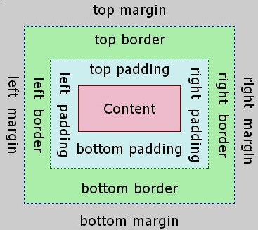

CSS is a style sheet language that is utilised along side mark-up language, generally html, in order to dictate how a web page looks, is composed and reacts. the acronym CSS stands for:
Unlike CSS, its implementation is not so basic as it requires hierarchy-based code and each element of code will definitely be affected by other elements. As well as this the functionality of CSS is rather vast and thus, contains a lot of material for a web developer to learn and gain experience with.
The three main elements within the CSS hierarchy are tags, classes and IDs. They are also present in that order with IDs being at the top of the pyramid and tags being at the bottom of it.
Tags refer to the elements within html themselves. It's use tends to be directed at a broader range of similar elements in order to maintain consistency throughout the web page.
Classes tend to be utilised when grouping certain elements together in order to create a more specific aesthetic or behaviour for that respective group. it can be used in conjunction with tags however its importance is regarded to as higher and thus will take precedent over tags.
IDs aren't always used as their requirement must be absolutely necessary in order for their use. They are given the highest position within the hierarchy and are thus invoked over both tags and classes however, they too can be used in conjunction in order to apply to very specific elements and their behaviour.
Colour an text tend to be the most generally related descriptors that people associate with CSS. This is due to the fact that CSS is mostly used to influence the aesthetic of a website. The large part of a web pages aesthetic is credited to the colours and text and thus, its association is not unrequited.
There are two manners in which colour is used. The background colour which is utilised in order to set the backing of a page or a certain devisor thus allowing the user to differentiate between elements. The other form of colour is the foreground colour which is utilised in order to recolour text without the use of html in a manner that is more professional as the using html for this purpose is deprecated.
Text has a lot on influence on a web page. Due to this, there are many related functions that can alter text size, font, alignment and even decorate them in some form.
An example of a colour consistent and aesthetically pleasing web page - Facebook
Composition is a major factor in terms of CSS as it is what enables a web page to look as it does and thus allows, the user of the website to navigate and differentiate between the many encompassing elements.
CSS utilises 'the box model' in order to order and place objects throughout the site as well as ensure the developer is able to correctly manipulate objects. The hierarchy that the box model follows is as such:
Different levels of each modifier can be added to any side of the content and thus, they can be used to relocate images and text throughout the site. As well as the box model, there are modifiers such as position and float which allow the developer to determine where the content is placed and how it behaves in relation to other content within the web page.